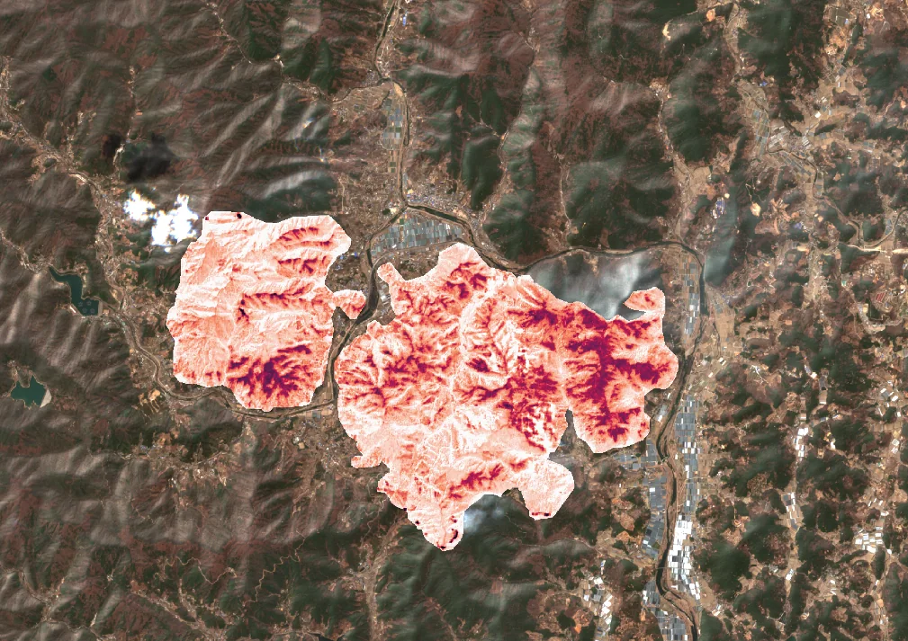
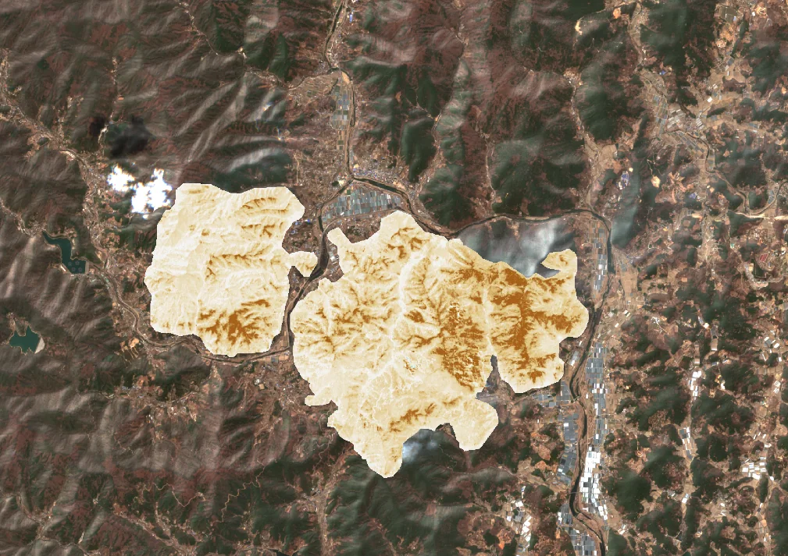
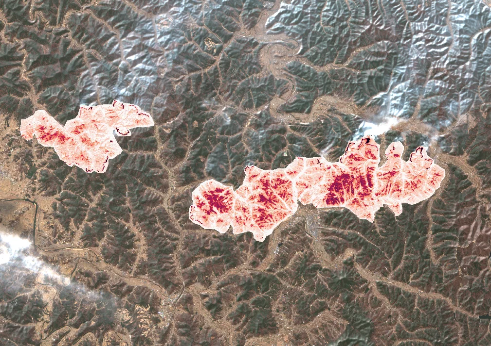
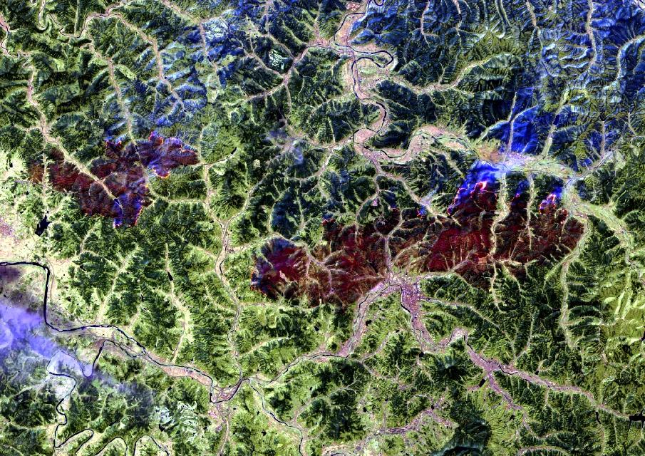
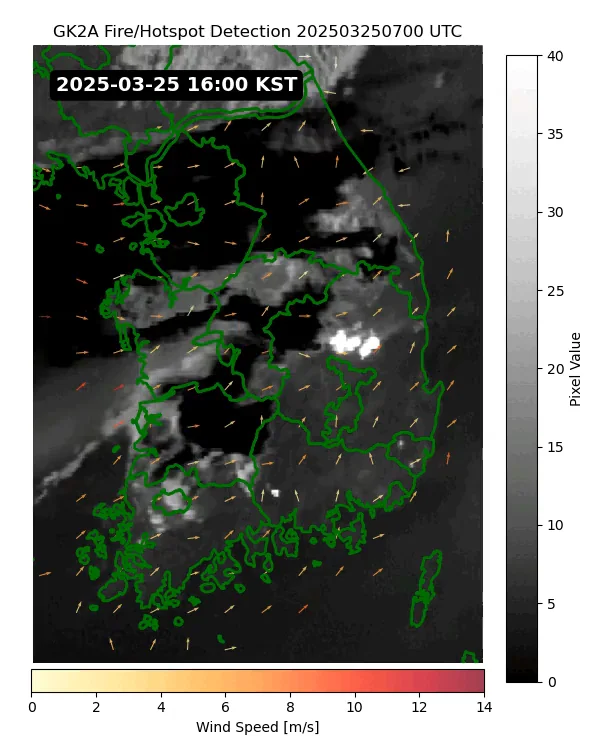
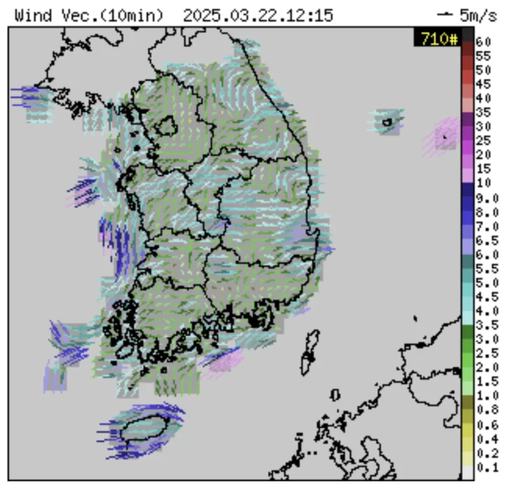
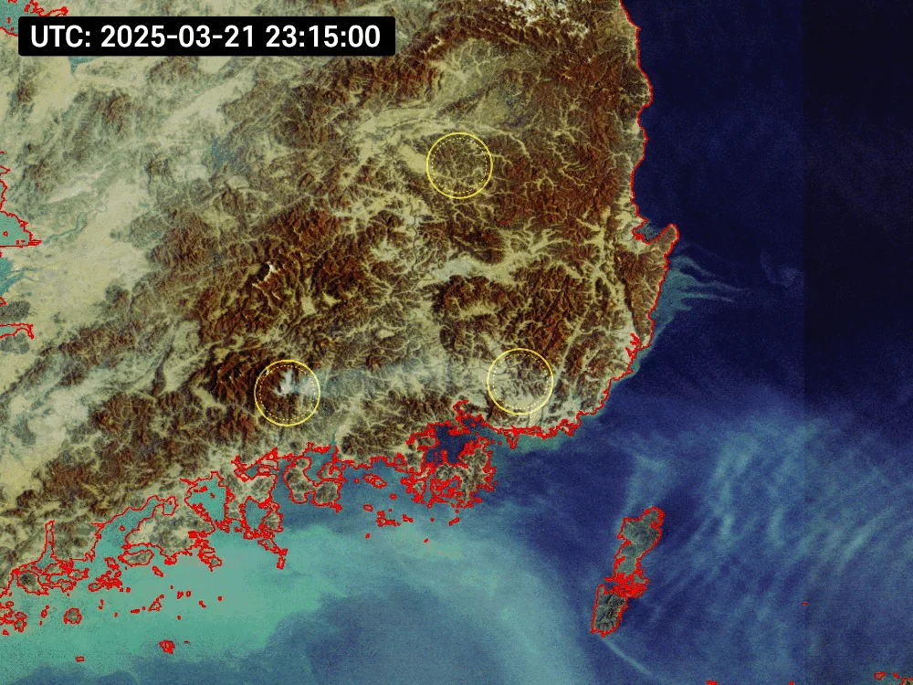
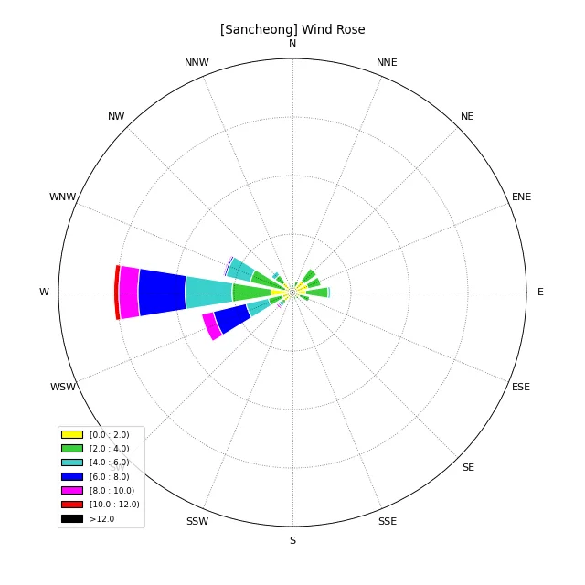

산불 피해 등급 분류 (dNBR)Wildfire Burn Severity Mapping (dNBR)
대형 산불 직후 피해 범위와 심각도를 USGS 5등급으로 자동 분류함. 하와이·그리스·산청 세 지역에서 검증하고, 정지궤도 위성으로 실시간 화점까지 함께 봤음.Automatic USGS five-class burn-severity mapping right after major fires — validated across Hawaii, Greece and Sancheong, paired with geostationary hotspot detection.
배경 · 목표Background
- 대형 산불 발생 후 피해 범위와 심각도를 위성영상으로 신속히 분류하는 기술이 필요함.
- 회사 신속대응 체계에서 언론 보도용 분석을 빠르게 산출해야 하는 요구가 있었음.
- After a major fire, burn extent and severity need to be mapped fast from satellite data.
- The company's rapid-response workflow needed analyses turned around quickly for press use.
방법Method
- Sentinel-2 NBR(Normalized Burn Ratio)의 화재 전후 차분으로 dNBR을 산출함.
- USGS 기준 5등급(미피해 / 저 / 중저 / 중고 / 고피해)으로 임계값 분류함.
- OmniCloudMask로 구름과 연기를 제거한 뒤 분석해 연기로 인한 과대 추정을 줄였음.
- 정지궤도 위성 GK2A / GOCI-II로 화점(hotspot)과 연기 확산을 시간 단위로 추적함.
- 기상 자료(풍향·풍속·습도·지표온도)를 결합해 확산 방향과 대조함.
- Computed dNBR from pre- and post-fire Sentinel-2 Normalized Burn Ratio.
- Classified into the five USGS severity classes (unburned, low, moderate-low, moderate-high, high).
- Masked cloud and smoke with OmniCloudMask before analysis, reducing smoke-driven overestimation.
- Tracked hotspots and smoke dispersion hourly using geostationary GK2A / GOCI-II.
- Combined with meteorology (wind direction and speed, humidity, surface temperature) to compare against spread direction.
결과Results
- dNBR 기반 피해등급 분류 파이프라인 완성
- 하와이(2023) · 그리스(2025) · 산청(2025) 3개 지역 비교 분석
- 정지궤도 기반 화점 탐지 + 풍향 벡터 중첩 시각화 완성
- A complete dNBR burn-severity pipeline.
- Comparative analysis across Hawaii (2023), Greece (2025) and Sancheong (2025).
- Geostationary hotspot detection with wind-vector overlays.









배운 점 · 한계What I learned · Limitations
- NBR/dNBR의 물리적 근거 — 연소 후 NIR 감소와 SWIR 증가 — 와 USGS 임계값의 유래를 이해함.
- 연기를 구름과 함께 마스킹하지 않으면 피해등급이 과대 추정된다는 점을 실제로 확인함.
- 정지궤도(시간해상도)와 극궤도(공간해상도)를 역할 분담시키는 설계 감각을 얻었음.
- Understood the physics behind NBR/dNBR — post-fire NIR drop and SWIR rise — and where the USGS thresholds come from.
- Confirmed in practice that failing to mask smoke along with cloud inflates severity estimates.
- Developed a feel for splitting roles between geostationary (temporal) and polar-orbiting (spatial) sensors.
분석 결과 문서Analysis documents
분석 당시 작성한 결과 문서를 그대로 싣음. 새 탭에서 열림.The result documents written during the analysis, published as-is. Opens in a new tab.
관련 코드Code
eo/sentinel-2/burn-severity/
저장소는 센서 → 위성 → 기법 순으로 정리돼 있고, 각 폴더에 입력·출력 표가 있음.The repository is organised by sensor, satellite and technique; each folder documents its inputs and outputs.
코드 저장소는 비공개입니다. 열람이 필요하시면 아래 연락처로 알려주시면 접근 권한을 드립니다.The code repository is private. Email me and I will grant you access.
산출물Deliverables
- dNBR 분류 코드
- 지역별 시각화 자료 3종
- dNBR classification code
- Three regional visualisation sets
원본 보고서와 발표자료는 사내 자료로 공개하지 않음. 분석 코드는 GitHub에 정리되어 있음.Source reports and decks are internal and not published here. Analysis code is organised on GitHub.